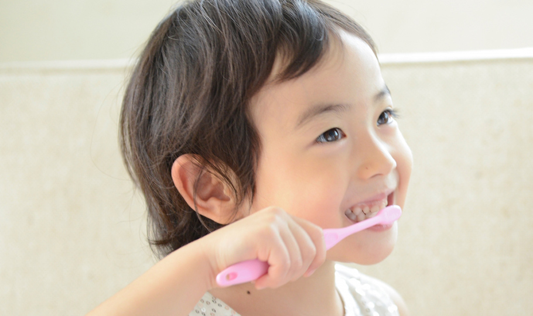
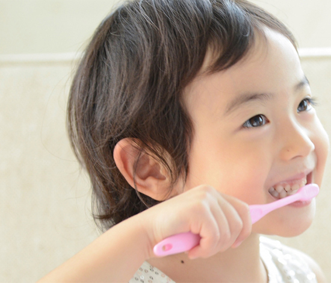
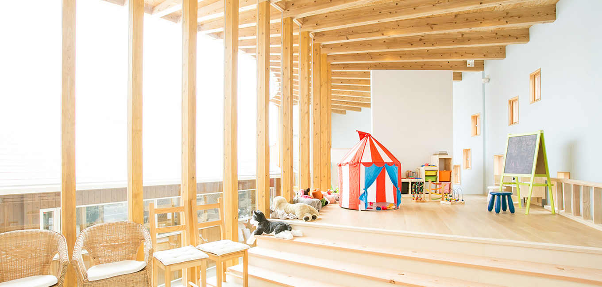
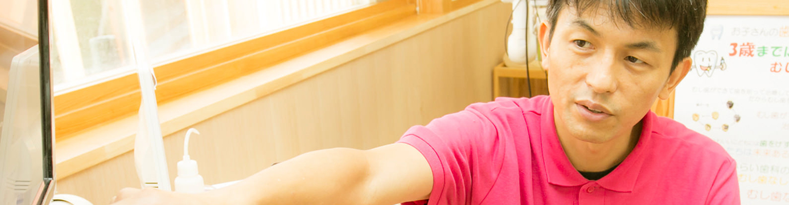

みらい歯科・子ども
矯正歯科の特徴Orthodontic Features
01
予防のため遊びに来る歯医者さん
当院には、大きな屋内遊技場“みらいキッズランド”や、保育園“みらいキッズガーデン”が併設されています。こどもが遊びに行きたくなる歯医者を目指し、自然に予防意識を身につけてもらえるよう配慮しています。
02
マイオブレース（子どもの矯正）
お口まわりや飲み込む際に関わる筋肉・舌を正しく鍛えるマウスピース型の装置、MRCトレーナー「Myobrace」を使って、歯並びを改善します。当院は佐賀県内で2医院しかない、MRCトレーナー・Myobraceの正式メンバークリニックですので、安心してご相談いただけます。
03
インビザライン（大人の矯正）
インビザラインとは、歯型を採って製作した透明なマウスピースタイプの装置を使って、歯を動かしていく矯正治療です。当院はインビザラインの専門医として認定を受けていますので、お気軽にご相談ください。
04
永久歯が生えそろう前の小児矯正
当院では永久歯が生えそろう前、乳歯の時期にスタートする小児矯正治療をおすすめしています。成長期に矯正治療を行うことで自然な成長の力を利用でき、多くのメリットを得られるからです。こどもの矯正治療は、知識・実績が豊富な当院におまかせください。
歯列矯正はおまかせくださいPlease leave orthodontic
佐賀県、鳥栖市の歯科「医療法人 敬天会 弥生が丘みらい歯科・こども矯正歯科クリニック」では、
一般向けの治療だけでなく、小児の歯列矯正を行っております。
「子どもの矯正っていつから始めたらいいの？」など、お悩みがありましたらお気軽にご相談下さい。

子どもの矯正治療
※当院は正式メンバークリニックです。

大人の矯正治療
※当院は正式メンバークリニックです。
院長のご挨拶Greetings from the director

むし歯予防と小児予防矯正を中心に地域の皆さまのお口の健康を支えます。
当院は小児歯科を中心に医療を提供し、“地域の皆さまの健康的で笑顔あふれる生活のお手伝い”を社是として、
最新の知識や技術の習得に日々邁進しています。こどもの遊び場”みらいキッズランド”を併設しました。
親子で快適に過ごせる環境が整っています。みらいに予防のために遊びに来てください!!